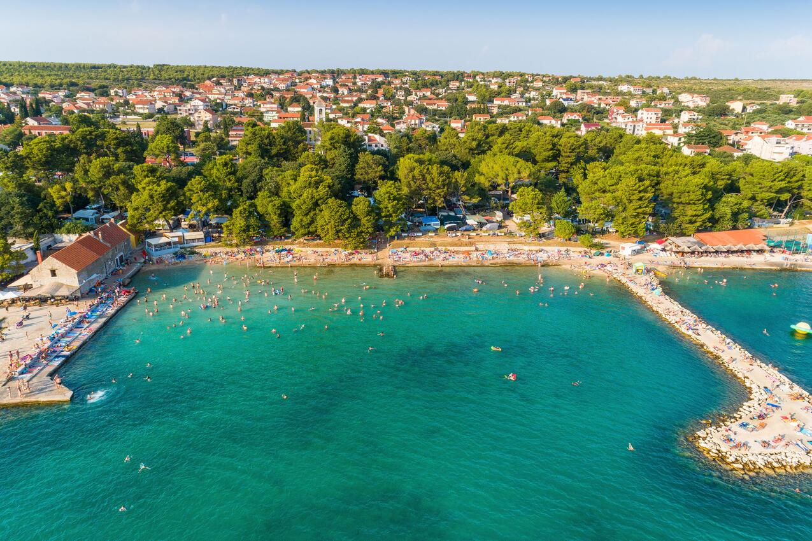
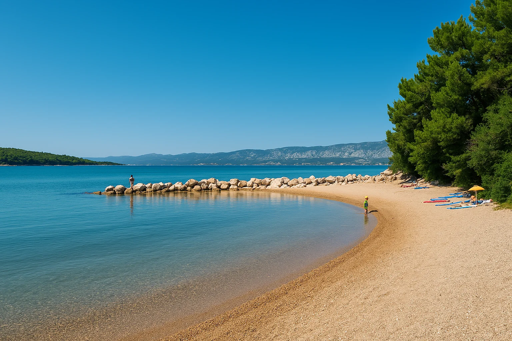
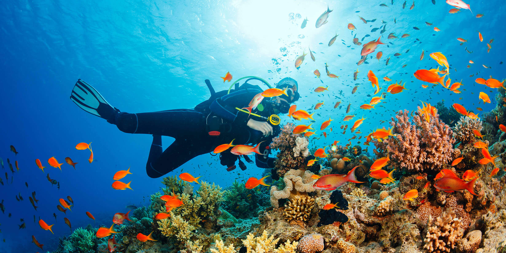
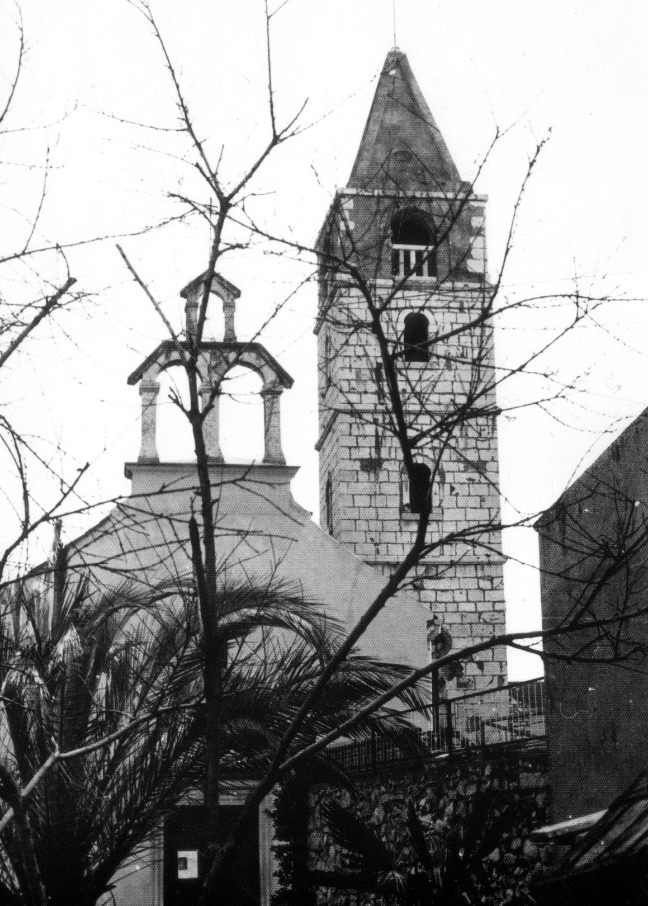
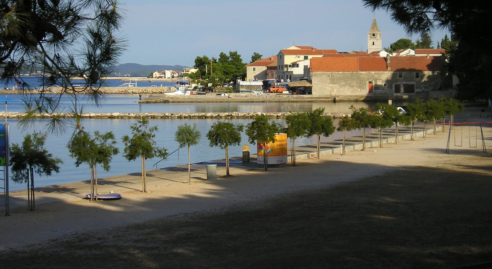
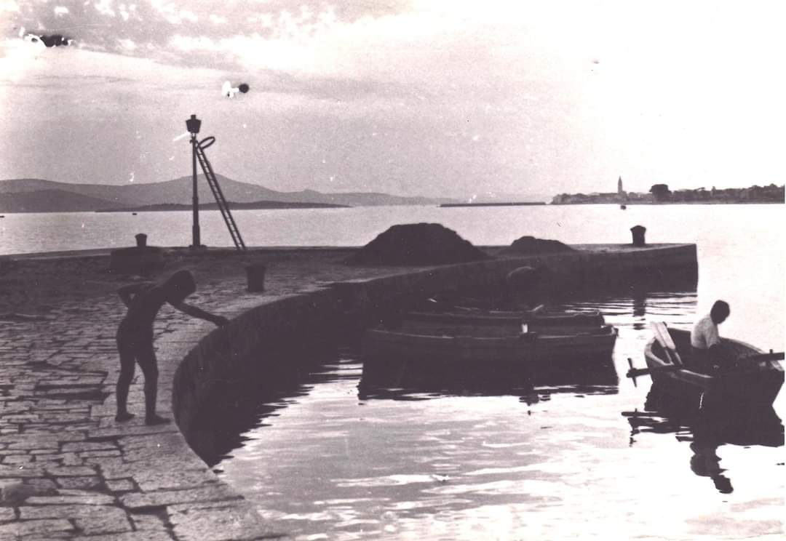
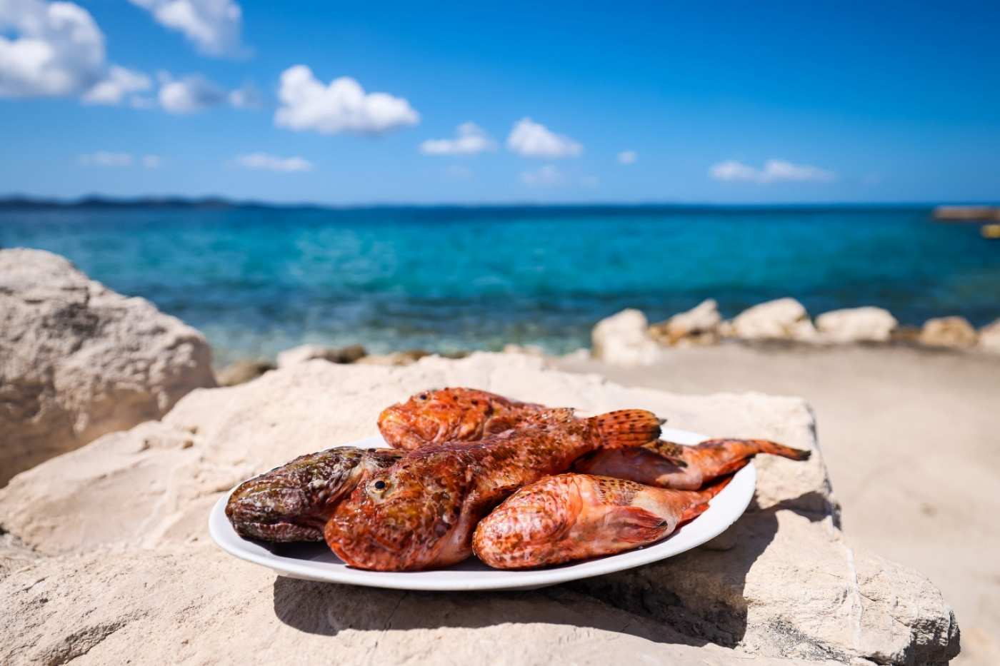
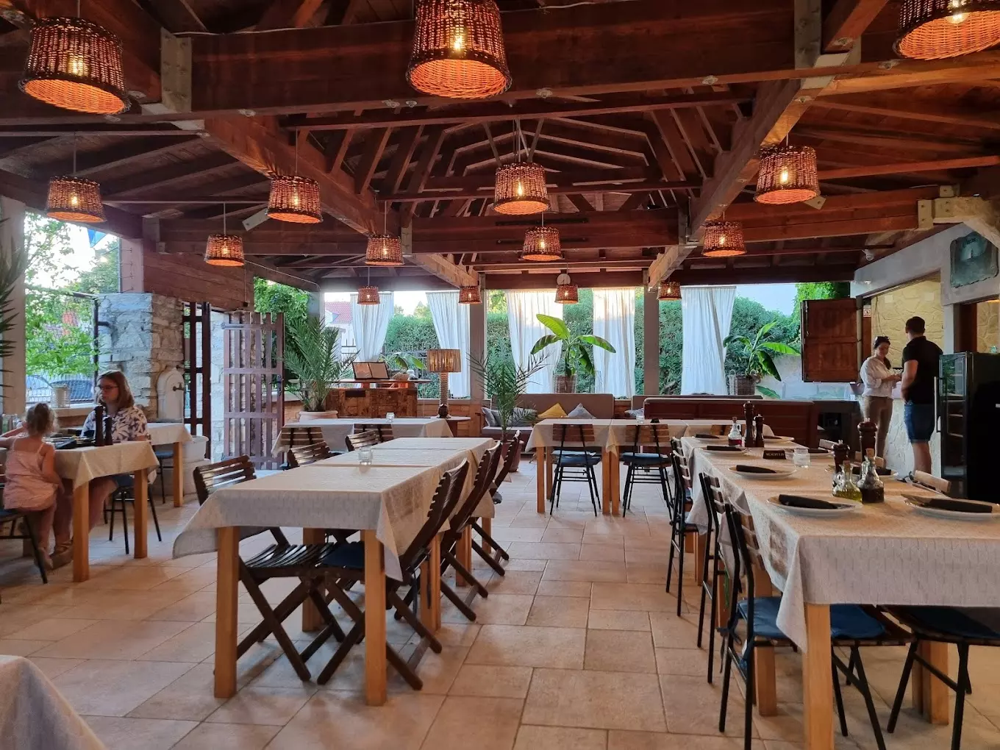
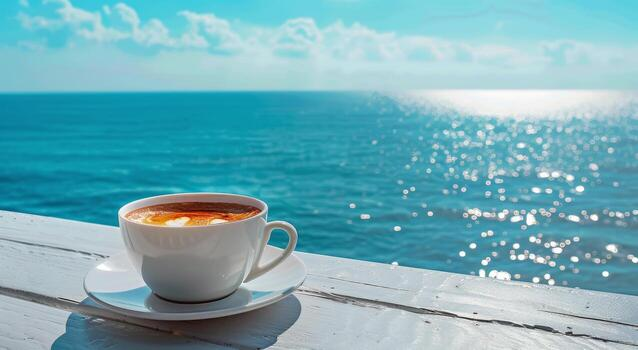

ŠljunakGlavna plaža
Najveća i najuređenija plaža mjesta, svega par koraka od centra. Tuševi, suncobrani i kafić uz plažu. Savršena za obitelji s djecom.
Sve što Sveti Filip i Jakov ima za ponuditi

ŠljunakNajveća i najuređenija plaža mjesta, svega par koraka od centra. Tuševi, suncobrani i kafić uz plažu. Savršena za obitelji s djecom.

UvalaMirna uvala između borova, idealna za one koji traže mir i tišinu. Dostupna pješice šetnicom ili brodicom.

AktivnoBogati podmorski svijet Jadrana – hobotnice, morske zvijezde i šarolike ribe. Ronilački centar dostupan u ljetnim mjesecima.

Kamena crkva iz 15. stoljeća zaštitni je znak mjesta. Smještena u srcu stare jezgre, okružena uskim dalmatinskim uličicama i cvijećem po prozorima starih kuća.
Crkva je otvorena za posjetitelje svakodnevno. Preporučamo jutarnji posjet kada je svjetlost idealna za fotografiranje.

ŠetnjaČetiri kilometra dugačka šetnica od centra mjesta do kampa nudi nezaboravne poglede prema otoku Pašmanu. Idealna za večernju šetnju.

AmbijentMalenajestanska luka s ribarskim brodovima koji ujutro donose svjež ulov. Savršeno mjesto za autentičnu fotografiju i jutarnju kavu.

RestoranLokalni restorani nude svjež ulov iz Jadrana – brancin, orada, luc. Tradicionalno priprema na gradelu s maslinovim uljem i češnjakom.

KonobaDomaće vino, peka, prstaci i gregada – autentični okusi Dalmacije u intimnom ambijentu kamenih zidova i starih barela.

KafićJutarnja kava uz zvuk valova, popodnevni smoothie ili večernji kokteli – šetnica je prošarana kavanama za svaki ukus i doba dana.